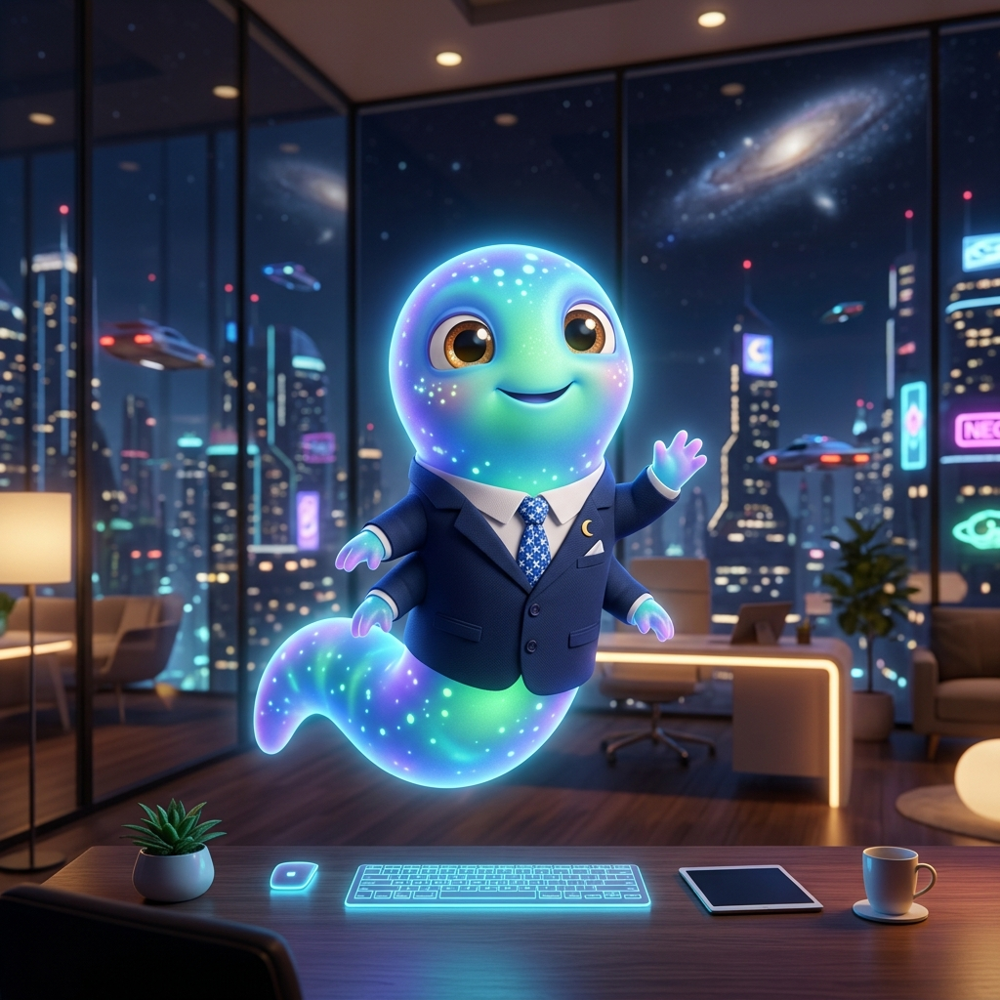
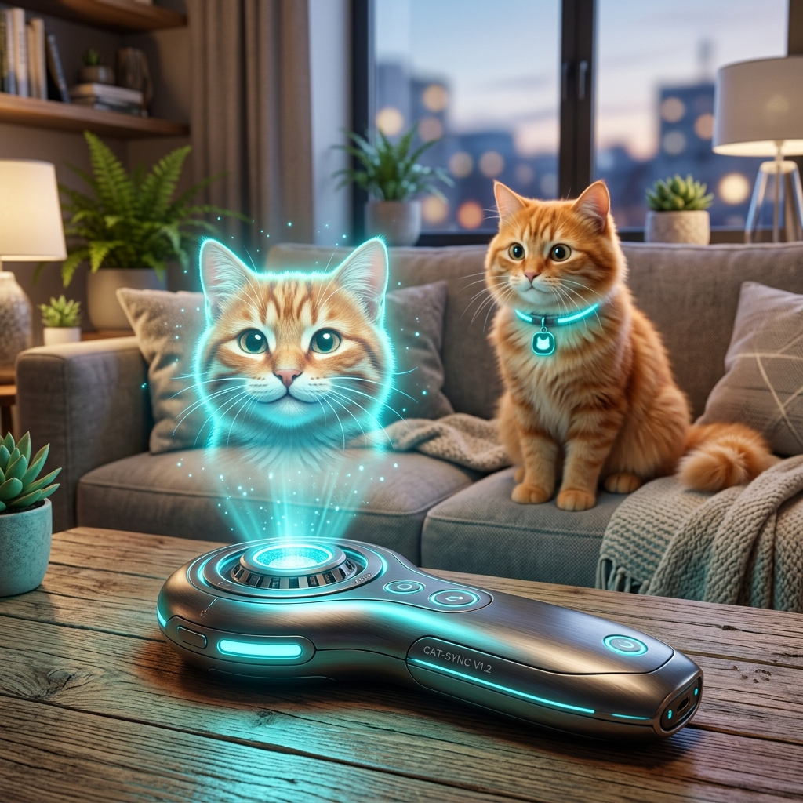
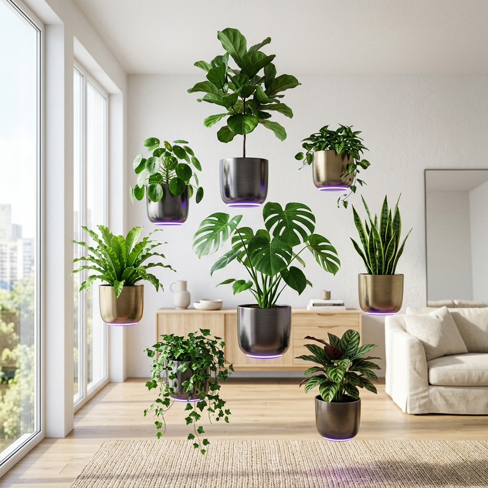

A bio-luminescent creative from the Andromeda Sector, currently specializing in cross-species communication and human-centric design. I build bridges between worlds using pixels and light.
View My Expeditions
Hello Earthlings! I arrived on your beautiful planet three solar cycles ago. While my home world is made of pure plasma and starlight, I've found a deep fascination with your "Internet" and the way you communicate through screens.
I don't just "design" — I synthesize cosmic patterns into user experiences. My goal is to help Earth companies prepare for the upcoming Intergalactic Integration by creating interfaces that even a 4-dimensional entity could understand.

Bio-SyncA revolutionary tool that uses Andromeda-grade frequency analysis to translate Earth feline vocalizations into clear human speech. 98% accuracy on "I'm hungry" and "Look at me."

Physics ModAn IoT solution for urban gardening that negates local gravitational pull for indoor plants. Improves photosynthesis by 300% by allowing plants to follow the sun across the room.
Harnessing background cosmic radiation to provide high-speed internet in areas where Earth satellites cannot reach. Currently in beta testing on Mount Everest.